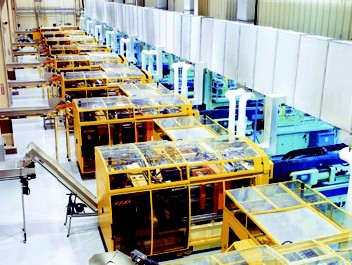
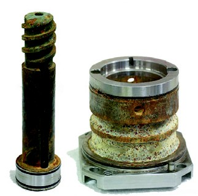

|
Bir
kalýbýn verimliliði, kalýbý oluþturan sistemlerin verimliliði
ile belirlenir. Kalýplar çok hýzlý çalýþmalarýna raðmen sýk
sýk bakým ve onarým için durdurulurlar. Bu durumlarda ürün
alamadýðýmýz için, üretim maliyeti en yüksek seviyededir.
Normalden yavaþ çalýþan kalýplarda, ürün maliyetini artýracaðý
için tercih edilmezler. Plastik enjeksiyon kalýpçýlýðýndaki
her bir ünite için ayný þey söylenebilir.
Bir kalýp, yolluk sistemi, itici sistemi, soðutma sistemi
ve mekanik aksamlarýn (maçalar v.b.) bir araya gelmesiyle
oluþur.
Dengesiz
ve hatalý bir yolluk sistemi tasarýmý sonucu, soðuk yolluk
her baskýda, kalýp içerisinde kalýyor ve makine operatörünün
yolluðu elle almasý gerekiyorsa, kalýp çevrim süresi uzayacak,
kalýp verimliliði düþecektir.
Ya da
mükemmel tasarlanmýþ yolluk sistemi olmasýna raðmen, kalýp
soðutma sisteminin yetersizliði, kalýp sýcaklýðýnýn kýsa zamanda
alýnmasýný saðlayamayacak ve yine çevrim süresi uzayacaktýr.
Soðutma sistem tasarýmýnýn, homojen olmamasý, kalýbýn her
bölgesinin, eþit sýcaklýkta tutulamamasý, kalýptan çýkan ürünün
istenmeyen þekilde çarpýlmasýna neden olacak, hatalý ürün
sayýsý artacak ve kalýp verimliliði düþecektir.
Uygun
olmayan bir itici sistemi tasarýmý yüzünden, sýk sýk kýrýlan
itici pimler de, üretimin aksamasýna ve kalýp veriminin düþmesine
sebep olur.
Bir
kalýbýn verimliliði, içerdiði tüm sistemlerin verimliliðine
baðlýdýr.
Ýyi
bir kalýpçý toplam verimlilik oranýný %80'in üzerinde tutabilmeli
ve bu oraný %90'ýn üzerinde çekmeyi hedeflemelidir.
KALIP
NEREDE VE NASIL ÇALIÞTIRILMALIDIR?
ÇEVRE ÞARTLARI
Ýdeal
çalýþma þartlarýnýn altýnda çalýþan kalýplara baktýðýmýzda,
(fakat bu tipik bir olay deðildir); kalýp çevre sýcaklýðý
soðuktan sýcaða; ortam havasý, kurudan nemliye, çevre temizliði,
temizden tozlu ve kirli ortama doðru sürekli deðiþir.
Bu
þartlardan herhangi birisindeki ani deðiþiklik, kalýplama
verimini önemli ölçüde etkilemektedir. Yüksek rutubet kalýbýn
paslanmasýna ve kalýp sýcaklýðýnda istenmeyen deðiþikliklere
sebep olarak, çevrim süresinin uzamasýna ve hatta makine operasyonlarýnýn
da kötü etkilenmesine yol açabilir.
Bir
örnek verelim:
Aþaðýdaki
resimde görüldüðü gibi, bir plastik fabrikasýnda, ayný özelliklere
sahip 8 adet plastik enjeksiyon makinesi, paralel olarak yerleþtirilmiþtir.
Bütün kalýplar birbirlerine benzer yapýda ve hemen hemen ayný
ebatlardadýr.

Resim 1: Paralel dizilmiþ 8 adet plastik enjeksiyon makinesi
Neden
kaynaklandýðý bilinmeyen bir sebepten sýk sýk duran son makinenin
dýþýndaki bütün makineler, hiç problemle karþýlaþmadan çalýþmaktadýrlar.
Yapýlan kontroller sonucu makinedeki problem enerji sistemindeki
dalgalanmalardan kaynaklandýðý ve bunun sonuncu olarak soðutma
sistemi gibi bir çok ünitede istenmeyen hatalar oluþmasýna
yol açtýðý görülmüþtür. Son makine kapatýlmýþtýr.
Ýþçiler
fabrika kapýsýný açarak, havalandýrma sisteminin verimini
düþürmüþtür. Açýk olan kapýdan giren soðuk hava, içerideki
havalandýrma sistemini olumsuz yönde etkilemek için yeterli
miktardadýr. Hata tespit edildikten sonra bu kapý sürekli
kapalý tutuldu ve bir daha bu makinede bir problemle karþýlaþýlmadý.
Baþka
bir örnek:
Kalýp
ve makineler mükemmel bir þekilde çalýþýyor fakat ara sýra,
ürün yüzeyinde lekeler ve kabarcýklar oluþuyordu. Yapýlan
araþtýrmalar, havadaki nem oranýnýn artýðýný göstermiþtir.
Kalýp
açma zamanýn uzun olduðu kalýplarda, bu nem partikülleri,
kalýp yüzeylerine yapýþmaktadýrlar. Havanýn rutubetli olduðu
dönemlerde, kalýp açma zamaný 2s ve üzerindeki kalýplarda,
rutubet partikülleri, soðuk olan kalýp çekirdekleri üzerinde
yoðunlaþarak, küçük damlacýklar oluþturmaktadýr. Damlacýklar
ürünün ön yüzeyinde, hava boþluðu þeklinde görüntüler oluþturmuþtur.
Kalýp
soðutma suyu sýcaklýðýný artýrýlmasýyla, kalýp çekirdek sýcaklýklarýnýn,
çið noktasýnýn üzerinde tutulmasý saðlanmýþ ve problem çözülmüþtür.
Bunun sonucu çevrim süresi biraz uzamýþ fakat sürekli ve hatasýz
üretim saðlanmýþtýr.
PASLANMANIN ÖNLENMESÝ
Kalýplarýn
korozyona karþý nasýl korunacaðýna karar vermek önemlidir.
Bu kalýp maliyetlerini etkilemektedir. Çok yaygýn bir yaklaþým,
kalýplar depoya kaldýrýlmadan önce kalýp yüzeylerine, kalýp
koruyucu veya silikon sýkmak yada temiz makine yaðý ile yaðlamaktýr
. Kalýplarýn dýþ yüzeyleri, yaðlý boya ile boyayarak, yüzeylere
hava ve su temas etmesi engellenmektedir.
Diðer
bir çözüm ise, kalýp çekirdeklerini krom oraný yüksek malzemelerden
yada paslanmaz çeliklerden yapmaktýr. Bu yöntemin kalýp maliyetini
artýrdýðýný unutmamak gerekir.
Baþka
bir yöntem kalýp plaka ve yüzeylerinin, elektro-nikel ile
kaplanmasýdýr. Bu yöntemde plakalar tamamen nikel ile kaplanýr.
Nikel soðutma kanallarýna kadar nüfuz etmesine karþýn, derin
soðutma kanallarýnýn en iç noktalarýna ulaþamayabilir. Nikel
kaplamasýnýn 70Rc sertliðinde olmasýna raðmen, kalýnlýðý çok
ince olmasý sebebiyle, çizilmelere ve darbelere karþý fazla
dayanlýklý deðildir.
Beklide
en iyi yöntem kalýp çekirdeklerini paslanmaz çelikten yapmaktýr.
Paslanmaz çelikler, diðer çeliklere göre biraz daha pahalýdýrlar.
Unutulmamalýdýr ki, kalýp uzun süre çalýþmadýðýnda, korozyonu
önlemek için ve kalýp korozyonlandýktan sonra, korozyonu
temizlemek için yapýlan masraflar, paslanmaz çeliðe harcanan
maliyetten daha fazladýr.
Kalýp
depoya uzun süre için kaldýrýlacaksa, kullanýlmadýðý zamanda
güven içinde korunabilmesi için, elekto-nikel yada krom kaplama
yapýlmalý ve bunlarýn maliyetleri de göz ardý edilmemelidir.
Her
zaman kalýp malzeme seçimi, kalýp malzeme maliyetinin, toplam
maliyete oranýný düþünerek yapýlmadýr.
PVC
gibi korozif özelliði yüksek plastikleri kalýplamak için,
kalýp çekirdek malzemeleri her zaman krom oraný yüksek çelikler
yada paslanmaz çeliklerden seçilmelidir. Yüksek sertlikte
paslanmaz çelikler, fiyatlarý yüksek olduðu halde, kalýp çekirdekleri
ve maçalarýnýn yapýmýnda yaygýn olarak kullanýlýrlar.
Diðer
bir çözüm yolu da, kalýp depolarýndaki hava þartlandýrýcýlarý
sayesinde, ortamdaki rutubeti en aza indirmektir. Bazý modern
plastik atölyeleri bu ekipmanlara sahiptir, bu da ilave maliyet
demektir.
Ara
sýra makine ve kalýbý, portatif nem giderici örtülerle sararak,
hem mevcut rutubeti almak hem de çevredeki rutubetle temasýný
kesmekte fayda vardýr.
SOÐUTMA
ÜNÝTESÝ
Soðutma
ünitesi seçiminde, sistem kalitesi, sistem nicelikleri ve
soðutma suyu basýncý hesaplanmalýdýr. Soðutma suyu akýþ hýzý,
türbülans oluþumuna sebep olmayacak düzeyde olmalýdýr. Türbülanslý
akýþ, litre baþýna soðutmaný düþürür.
MEVCUT SOÐUTMA ÜNÝTESÝ, ENJEKSÝYON ATÖLYEMÝZ ÝÇÝN YETERLÝ
MÝ?
Enjeksiyon
atölyemiz için, yeterli soðutma suyu akýþý ve basýncý elde
edemiyorsak, pahalý ve ayrýntýlý bir soðutma sistemi tasarýmý
yapýlmasýna gerek yoktur. Daha ekonomik yöntemler de mevcuttur.
Makine
sayýlarýný artýrdýðý halde, soðutma sistemi kapasitesini artýrmayan
firmalar vardýr. Sonuçta yeterli soðutma saðlanamadýðý için
kalýplar daha yavaþ çalýþmaktadýr.
Ýyi
soðutma, sadece soðutma suyu sýcaklýðýna ve dakika baþýna
kalýp içerisinden geçen soðutma suyunun hacmine baðlý deðil,
önemli ölçüde kalýptaki soðutma sistemi tasarýmýna da baðlýdýr.
Dakikada kalýp içerisinden geçen su miktarý, soðutma suyu
kanallarý daðýlýmýna ve soðutma suyu giriþ ve çýkýþlarýndaki
basýnç farklarýna baðlýdýr.
SOÐUTMA SUYU TEMÝZ MÝ?

Resim 2: Paslanmýþ ve kireçlenmiþ soðutma ünitesi elemanlarý
Soðutma
suyu oksitlenme yaparak, kanallar arasýný zaman içerisinde
çürütmektedir. Paslanmaz çelik kullanmak bize avantaj saðlayacaktýr.
Soðutma suyu kireç ve kirlerden arýndýrýlmýþ olmalýdýr. Su
içerisinde bulunan kir ve kireç zamanla, soðutma kanallarýnýn
köþelerinden ve birleþme yerlerinde birikmeye baþlayarak,
týkanmalarýna sebep olur. Özellikle soðutma kanal çaplarý
küçükse ve soðutma kanallarý kalýp içerisinde çok fazla dolaþýyorsa,
zaman içerisinde önce kanal çaplarýnýn azalmasý ve daha sonra
týkanmasý kaçýnýlmazdýr.
Böylesi
kötü þartlar içerisinde de, beklide ilk aylarda, kalýp çalýþmasý
ve ürün, memnun edici bir kalitede olabilmektedir. Ýlerleyen
zamanlarda soðutma kanallarýnýn yavaþ yavaþ týkanmasý ile,
kalýp soðutma verimliliði giderek düþecek, kalýp çalýþmasý
yavaþlayacaktýr.
Soðutma
kanallarýnýn týkanmasý, daha sýk kalýp bakýmý gerektirir ve
kalýp bakým süresinin uzamasýna ve gereksiz maliyet artýþýna
sebep olur.
Pas
ve kireç, izolatör görevi yaparak, kalýp sýcaklýðýnýn, soðutma
suyuna aktarýlmasýný güçleþtirir.
Soðutma
sistemi verimlililiðini artýrmak için, soðutma kanallarý içerisindeki
tortu ve kireçlenmelerin önüne geçmek gereklidir.
|